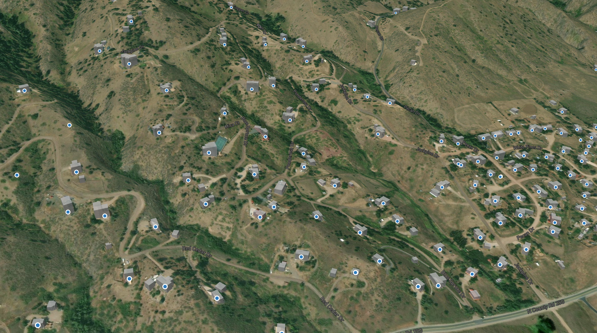

Problem
Emergency dispatch teams rely heavily on accurate, up-to-date spatial information to make quick and informed decisions. Recent tools are limited to 2D desktop GIS environments, making it difficult to interpret infrastructure like buildings, floors, and service sites.
A browser-based, interactive 3D viewer was needed to bridge the gap between GIS data and real-world emergency response workflows.
Solution
Built an interactive 3D GIS web application using Mapbox GL JS to visualize site data. The application includes:
- Extruded 3D buildings for enhanced spatial context
- Floor plans loaded dynamically via ArcGIS REST Feature Service queries
- High-resolution satellite imagery overlays
- Real-time service site points and road centerline from ArcGIS Feature Services
This solution delivers a web-based, real-time 3D viewer that is accessible from any modern browser. It supports layer toggling and intelligent data loading based on the current map zoom level and extent, improving performance and user experience.
</> Snippet
map.on('click', 'leta-points-layer', function (e) {
const coordinates = e.features[0].geometry.coordinates.slice();
const props = e.features[0].properties;
let info = '';
for (const key in props) {
info += `${key}: ${props[key]}
`;
}
new mapboxgl.Popup()
.setLngLat(coordinates)
.setHTML(info)
.addTo(map);
});
Popup the attribute of the data

3D Terrain and Building with Sites Fetched from ArcGIS Rest API
Features
- 3D Building Extrusion: Dynamically extrudes buildings based on real-world height attributes.
- Draped Satellite Imagery: Overlays Esri World Imagery and terrain to simulate real-world elevation and environment.
- Interactive Floor Plan Integration:
- Loads GeoJSON from ArcGIS FeatureServer on demand (based on view extent)
- Outlines and fills building floors with styled layers
- Dynamic Site Points:
- Loads only visible data (based on zoom and bounds)
- Shows site attributes on click via popup
- Labels address fields at high zoom levels
- Layer Switcher UI: Custom HTML controls for toggling visibility of:
- 3D Buildings
- Floor Plans
- Sites and so on
Impact
- Increased accessibility: Made advanced spatial analysis available to non-GIS users via a browser-based viewer.
- Reduced reliance: Less need for desktop GIS software for visual validation of sites and infrastructure.
- Real-time performance optimization: Loads only floor plans and service points within current extent, improving speed and usability.
- Enhanced spatial storytelling: 3D visuals and interactivity can improve decision-making.